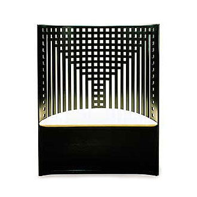
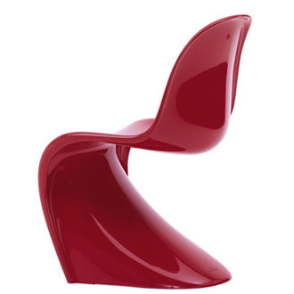
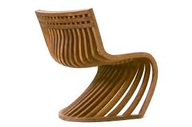

The design of the Pantosh chair was born from the fusion of two extraordinary and representative examples of design of the XX century: the Panton chair by Verner Panton, and the Willow Chair, designed by Charles R.Mackintosh.
CHARLES RENNIE MACKINTOSH, WILLOW CHAIR, 1904
Charles Rennie Mackintosh created the Willow Chair for the Willow Tea Room in Glasgow, Scotland between 1902 and 1904. The Willow Chair was used in the center of the two ground floor saloons at the Willow Tea Rooms, separating the front and back saloon. The Willow Chair's curved back forms the pattern of a willow tree and the lattice is made from a series of short horizontal insets between the continuous verticals slats. The chair was used by the tea room's supervisor. The grate design in the curved back appears to be a stylized tree and a play on the name of the tearoom. According to Pevsner, the architecture of the Willow Team Room reveal Mackintosh as the European counterpart to Frank Lloyd Wright.
VERNER PANTON, PANTON CHAIR, 1960
 Verner Panton was one of the most influential figures in the development of design during the 1960s and 1970s. Along with his experimental approach to forms and colours, he was captivated by the potential of plastic, a novel material at the time. His aim was to create a comfortable chair made in one piece that could be used anywhere. After searching for a manufacturer for several years, Panton came into contact with Vitra in 1963. Together they developed the Panton Chair, which was first presented in 1967. Serial production of the Panton Chair commenced in 1967. It was hailed as a sensation and received numerous prizes. One of the earliest models is now in the collection of the Museum of Modern Art in New York. Today the Panton Chair is regarded as a classic of modern furniture design. The original version of the chair in rigid polyurethane foam with a glossy lacquer finish is marketed under the name Panton Chair Classic.
LATTOOG, PANTOSH CHAIR, 2008

This chair is part of the ´Fusions Series´, a diverse collection of pieces including furniture, objects and architectural elements which are the result of a constant recombination process among furniture and objects resulting in next-generation creations.
The Pantosh chair embodies the concept of "cultural anthropophagy", launched in Brazil by Oswald de Andrade in 1928
The chair makes strong yet subtle references to the roots of Brazilian culture, expressing a true "mongrel" philosophy that highlights the elements of miscegenation and syncretism in the Brazilian people.
The name of this piece also plays with the notion of fusion:
Panton + Mackintosh = Pantosh.